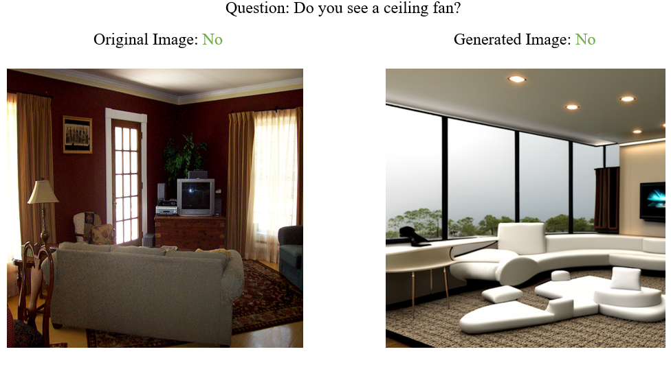

Hi! I am a undergraduate student at the University of Washington majoring in Computer Science with minors in Applied Mathematics and History. I currently work as a research assistant at RAIVN Lab mentored by Aditya Kusupati under Prof. Ali Farhadi. My main research interests are in both AI/ML and how they intersect with the humanities.

I worked with a two classmates to create an experimental Visual Question Answering dataset with future shifted images generated using Stable Diffusion 2.0.
PDFI like to study history. Here are some essays that I enjoyed writing.
I examine Americans' reaction to the Great Depression and who they blamed for the disaster.
I compare the credibility and accuracy of Einhard and Gregory of Tours as sources for Clovis and Charlemagne. I argue that Gregory of Tours was more credible than Einhard despite Einhard's proximity to Charlemagne.
I contend that the Detroit Riots of 1967 were primarily caused by the decentralization of Detroit's automobile industry in the decade prior. I also examine other causes.